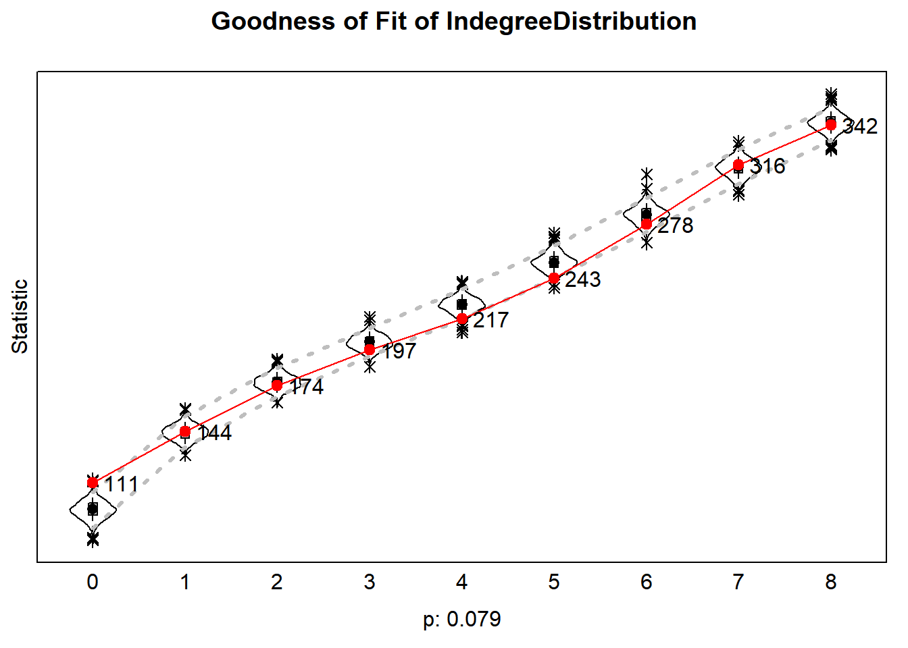
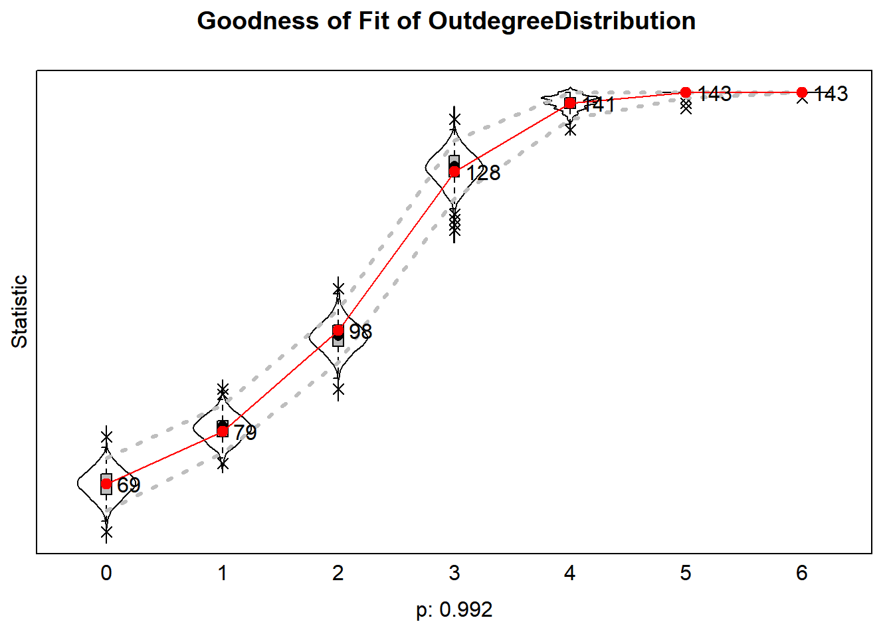
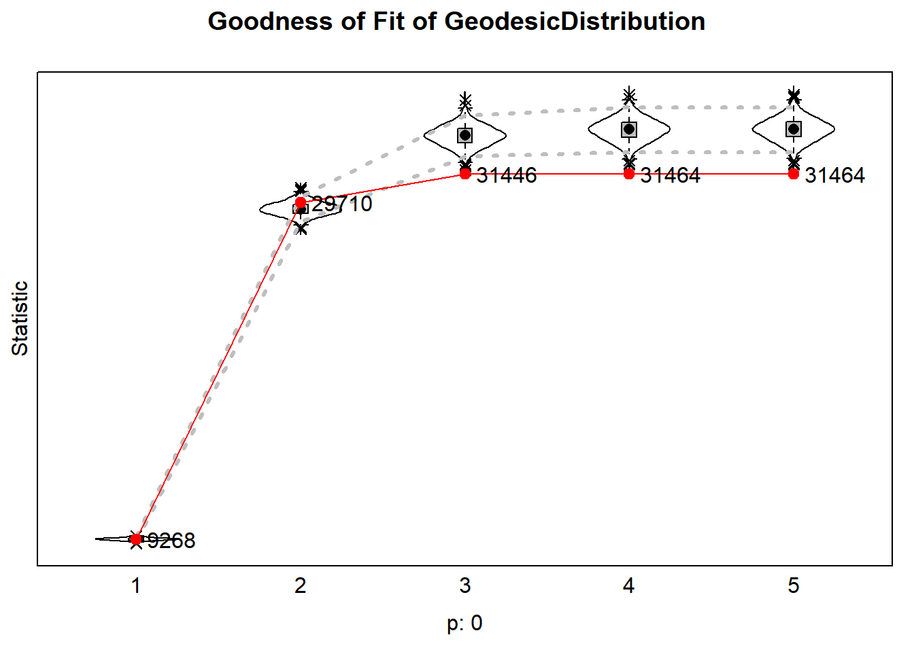
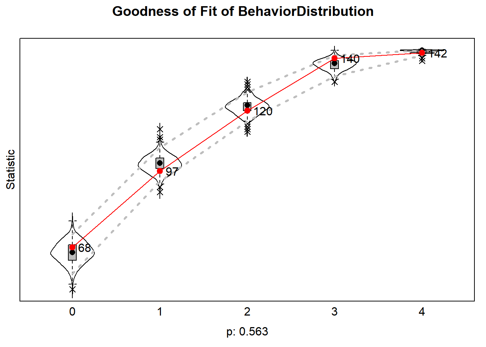
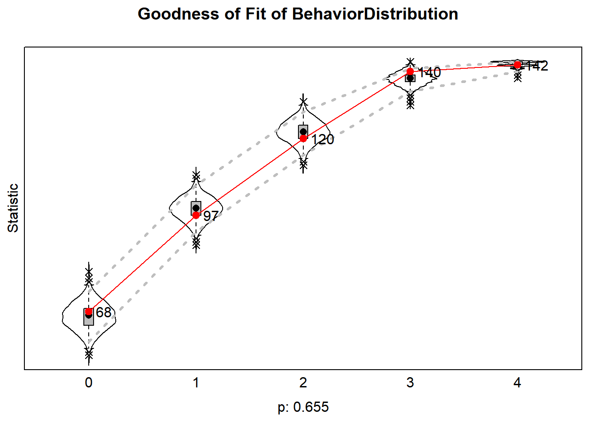

Meta-analysis
Last compiled on oktober, 2021
We will estimate the SAOM for the remaining 4 clubs, and to summarize the results over our clubs, we will perform a meta-analysis using a Fisher-type combination of one-tailed p-values, described by Hedges and Olkin (2014) and Snijders and Bosker (2011) (Chapter 3).
Preparation
Clean the working environment and read in the R-SIENA object list.
# clean the working environment
rm(list = ls())
# load in the R-SIENA objects
load("clubdata_rsiena.Rdata")Estimate SAOMs for other clubs
For each club, we incrementally build the model and assess GOF.
Club 2
Club 3
Club 4
First, we model network structure and dynamics in kudos tie formation.
In this club, the outIsolate-effect (leading to now giving kudos to anyone) was rather important: a score-type test indicated that it was not 0 (not shown). Selection effects of gender and running (monadic and dyadic) were also score-type tested and fixed to 0.
mydata <- clubdata_rsiena[[4]] # grab club
myeff <- getEffects(mydata) # define myeff object
# structural network effects
myeff1 <- includeEffects(myeff, gwespFF, name = "kudonet")
myeff1 <- includeEffects(myeff1, outActSqrt, inPopSqrt, name = "kudonet")
myeff1 <- setEffect(myeff1, outIso, name = "kudonet")
# selection effects for kudos ties formation based on running activity (fixed to 0)
myeff2 <- setEffect(myeff1, egoX, name = "kudonet", interaction1 = "freq_run", fix = TRUE, test = FALSE,
initialValue = 0)
myeff2 <- setEffect(myeff2, altX, name = "kudonet", interaction1 = "freq_run", fix = TRUE, test = FALSE,
initialValue = 0)
myeff2 <- setEffect(myeff2, sameX, name = "kudonet", interaction1 = "freq_run", fix = TRUE, test = FALSE,
initialValue = 0)
# and selection based on gender (fixed to 0)
myeff2 <- setEffect(myeff2, egoX, name = "kudonet", interaction1 = "gender", fix = TRUE, test = FALSE,
initialValue = 0)
myeff2 <- setEffect(myeff2, altX, name = "kudonet", interaction1 = "gender", fix = TRUE, test = FALSE,
initialValue = 0)
myeff2 <- setEffect(myeff2, sameX, name = "kudonet", interaction1 = "gender", fix = TRUE, test = FALSE,
initialValue = 0)We (1) define the algorithm, (2) estimate the model, and (3) assess GOF based on three auxiliary network statistics: otudegree, indegree and geodesic distance distribution. We will run the model as many times as necessary, until we reach a convergence ratio of < .25.
myalgorithm <- sienaAlgorithmCreate(projname = "test") # set the SAOM algorithm
try <- 1
ansM1 <- siena07(myalgorithm, data = mydata, effects = myeff2, # estimate the SAOM
batch = FALSE, verbose = FALSE, returnDeps = TRUE)
# the following script lets the model re-run until we get a good convergence ratio
while (TRUE){
if(ansM1$tconv.max >= .25){
try <- try + 1
print(paste("Model did not converge: ", ansM1$tconv.max, sep = ""))
print(paste("Try:", try, sep=" "))
ansM1 <- siena07( myalgorithm, data = mydata, effects = myeff2, prevAns= ansM1, returnDeps=TRUE)
}else{
print(paste("Reached overall maximum convergence ratio of ", ansM1$tconv.max, sep = ""))
break
}
}
gofi <- sienaGOF(ansM1,
IndegreeDistribution,
verbose = TRUE,
join = TRUE,
varName = "kudonet")
gofo <- sienaGOF(ansM1,
OutdegreeDistribution,
verbose = TRUE,
join = TRUE,
varName = "kudonet")
GeodesicDistribution <- function (i, data, sims, period, groupName,
varName, levls=c(1:5, Inf), cumulative=TRUE, ...) {
x <- networkExtraction(i, data, sims, period, groupName, varName)
require(sna)
a <- sna::geodist(symmetrize(x))$gdist
if (cumulative)
{
gdi <- sapply(levls, function(i){ sum(a<=i) })
}
else
{
gdi <- sapply(levls, function(i){ sum(a==i) })
}
names(gdi) <- as.character(levls)
gdi
}
gofgeo <- sienaGOF(ansM1,
GeodesicDistribution,
verbose = TRUE,
join = TRUE,
varName = "kudonet")
goflist <- list(gofi, gofo, gofgeo)
save(goflist, file= paste("files", "/", "other clubs", "/", "club 4", "/", "gof1.RData", sep=""))Indegree distribution
load("files/other clubs/club 4/gof1.RData")
plot(goflist[[1]])#> Note: some statistics are not plotted because their variance is 0.
#> This holds for the statistic: 8.
Outdegree distribution
plot(goflist[[2]])#> Note: some statistics are not plotted because their variance is 0.
#> This holds for the statistics: 7 8.
Geodesic distance distribution
plot(goflist[[3]])#> Note: some statistics are not plotted because their variance is 0.
#> This holds for the statistic: Inf.
GOF is all right!
Second, we model dynamics in running behaviors.
# covariate effects: interdependency frequency and duration
myeff3 <- includeEffects(myeff2, effFrom, name = "time_run", interaction1 = "freq_run")
myeff3 <- includeEffects(myeff3, effFrom, name = "freq_run", interaction1 = "time_run")
# effects from other sports
myeff3 <- includeEffects(myeff3, effFrom, name = "time_run", interaction1 = "time_other")
myeff3 <- includeEffects(myeff3, effFrom, name = "freq_run", interaction1 = "freq_other")
# gender effects (fixed to 0)
myeff3 <- setEffect(myeff3, effFrom, name = "freq_run", interaction1 = "gender", fix = T, test = F, initialValue = 0)
myeff3 <- setEffect(myeff3, effFrom, name = "time_run", interaction1 = "gender", fix = T, test = F, initialValue = 0)
# influence effects:
# 1. indegree effect
myeff3 <- includeEffects(myeff3, indeg, name = "freq_run", interaction1 = "kudonet")
myeff3 <- includeEffects(myeff3, indeg, name = "time_run", interaction1 = "kudonet")
# 2. upward assimilation
myeff4 <- includeEffects(myeff3, avAttHigher, name = "freq_run", interaction1 = "kudonet")
myeff4 <- includeEffects(myeff4, avAttHigher, name = "time_run", interaction1 = "kudonet")
# outdegree effect (fixed at 0)
myeff4 <- setEffect(myeff4, outdeg, name = "freq_run", interaction1 = "kudonet", fix = T, test = F, initialValue = 0)
myeff4 <- setEffect(myeff4, outdeg, name = "time_run", interaction1 = "kudonet", fix = T, test = F, initialValue = 0)
# rate parameter at fixed value
myeff4 <- setEffect(myeff4, Rate, name = "freq_run", fix = TRUE, test = FALSE, type = "rate", period = 8,
initialValue = 5)We estimate the model and investigate another GOF-diagnostic: the distribution of running behavior variables. We estimate (1) a model with the objective function for running activity comprising the basic shape effects, covariate effects, and indegree effect; and (2) a model including the upward assimilation and outdegree effect. We save the sienaFit-objects of both models for subsequent meta-analyses.
This club faced convergence issues in the last model. We achieved convergence by (1) fixing the outdegree-effect to 0 (score-type test indicated that this effect was 0) and fixing the rate parameter for running frequency dynamics to 5 in period 8 (we aimed at a t-ratio for convergence for this parameter of <.2).
The indegree-effect
try <- 1
ansM2 <- siena07(myalgorithm, data = mydata, effects = myeff3, # estimate the SAOM
batch = FALSE, verbose = FALSE, returnDeps = TRUE)
# the following script lets the model re-run until we get a good convergence ratio
while (TRUE){
if(ansM2$tconv.max >= .25){
try <- try + 1
print(paste("Model did not converge: ", ansM2$tconv.max, sep = ""))
print(paste("Try:", try, sep=" "))
ansM2 <- siena07( myalgorithm, data = mydata, effects = myeff3, prevAns= ansM2, returnDeps=TRUE)
}else{
siena.table(ansM2, type="html", tstat=T, d=3, sig=T, file = paste("files", "/", "other clubs", "/", "club 4", "/", "Model 2", ".html", sep=""))
print(paste("Reached overall maximum convergence ratio of ", ansM2$tconv.max, sep = ""))
break
}
}
gofbeh <- sienaGOF(ansM2,
BehaviorDistribution,
verbose = TRUE,
join = TRUE,
varName = "freq_run")
gofbeh2 <- sienaGOF(ansM2,
BehaviorDistribution,
verbose = TRUE,
join = TRUE,
varName = "time_run")
goflist2 <- list(gofbeh, gofbeh2)
save(goflist2, file= paste("files", "/", "other clubs", "/", "club 4", "/", "gof2.RData", sep=""))
# save the sienaFit object
save(ansM2, file= paste("files", "/", "other clubs", "/", "club 4", "/", "model2.RData", sep=""))Violin plot of running frequency
load("files/other clubs/club 4/gof2.RData")
plot(goflist2[[1]])#> Note: some statistics are not plotted because their variance is 0.
#> This holds for the statistic: 5.
Violin plot of running duration
plot(goflist2[[2]])#> Note: some statistics are not plotted because their variance is 0.
#> This holds for the statistic: 7.
The upward assimilation effect
try <- 1
ansM3 <- siena07(myalgorithm, data = mydata, effects = myeff4, # estimate the SAOM
batch = FALSE, verbose = FALSE, returnDeps = TRUE)
# the following script lets the model re-run until we get a good convergence ratio
while (TRUE){
if(ansM3$tconv.max >= .25){
try <- try + 1
print(paste("Model did not converge: ", ansM3$tconv.max, sep = ""))
print(paste("Try:", try, sep=" "))
ansM3 <- siena07( myalgorithm, data = mydata, effects = myeff4, prevAns= ansM3, returnDeps=TRUE)
}else{
siena.table(ansM3, type="html", tstat=T, d=3, sig=T, file = paste("files", "/", "other clubs", "/", "club 4", "/", "Model 3", ".html", sep=""))
print(paste("Reached convergence ratio of ", ansM3$tconv.max, sep = ""))
break
}
}
gofbeh <- sienaGOF(ansM3,
BehaviorDistribution,
verbose = TRUE,
join = TRUE,
varName = "freq_run")
gofbeh2 <- sienaGOF(ansM3,
BehaviorDistribution,
verbose = TRUE,
join = TRUE,
varName = "time_run")
goflist3 <- list(gofbeh, gofbeh2)
save(goflist3, file= paste("files", "/", "other clubs", "/", "club 4", "/", "gof3.RData", sep=""))
# save the sienaFit object
save(ansM3, file= paste("files", "/", "other clubs", "/", "club 4", "/", "model3.RData", sep=""))Violin plot of running frequency
load("files/other clubs/club 4/gof3.RData")
plot(goflist3[[1]])#> Note: some statistics are not plotted because their variance is 0.
#> This holds for the statistic: 5.
Violin plot of running duration
plot(goflist3[[2]])#> Note: some statistics are not plotted because their variance is 0.
#> This holds for the statistic: 7.
Results
The indegree-effect on running
| Effect | par. | (s.e.) | t stat. | |||||
| Network Dynamics | ||||||||
| constant kudonet rate (period 1) | 0.942 | ( 0.663) | . | |||||
| constant kudonet rate (period 2) | 0.511 | ( 0.398) | . | |||||
| constant kudonet rate (period 3) | 1.163 | ( 0.699) | . | |||||
| constant kudonet rate (period 4) | 0.680 | ( 0.581) | . | |||||
| constant kudonet rate (period 5) | 0.686 | ( 0.483) | . | |||||
| constant kudonet rate (period 6) | 1.055 | ( 0.619) | . | |||||
| constant kudonet rate (period 7) | 3.568 | ( 2.592) | . | |||||
| constant kudonet rate (period 8) | 1.005 | ( 0.632) | . | |||||
| constant kudonet rate (period 9) | 2.065 | ( 0.971) | . | |||||
| constant kudonet rate (period 10) | 0.643 | ( 0.489) | . | |||||
| constant kudonet rate (period 11) | 2.104 | ( 1.421) | . | |||||
| outdegree (density) | 2.266 | ( 2.905) | 0.780 | |||||
| reciprocity | 3.029 | *** | ( 0.695) | 4.361 | ||||
| GWESP I -> K -> J (69) | 1.759 | ** | ( 0.578) | 3.045 | ||||
| indegree - popularity (sqrt) | –0.033 | ( 0.669) | –0.049 | |||||
| outdegree - activity (sqrt) | –2.073 | * | ( 1.044) | –1.986 | ||||
| out-isolate | 5.415 | * | ( 2.180) | 2.483 | ||||
| gender alter | N.A. | ( N.A.) | . | |||||
| gender ego | N.A. | ( N.A.) | . | |||||
| same gender | N.A. | ( N.A.) | . | |||||
| freq-run alter | N.A. | ( N.A.) | . | |||||
| freq-run ego | N.A. | ( N.A.) | . | |||||
| same freq-run | N.A. | ( N.A.) | . | |||||
| Behaviour Dynamics | ||||||||
| rate time-run (period 1) | 10.602 | ( 9.909) | . | |||||
| rate time-run (period 2) | 5.157 | ( 5.342) | . | |||||
| rate time-run (period 3) | 3.323 | ( 2.010) | . | |||||
| rate time-run (period 4) | 5.245 | ( 4.392) | . | |||||
| rate time-run (period 5) | 11.281 | (15.756) | . | |||||
| rate time-run (period 6) | 3.458 | ( 2.833) | . | |||||
| rate time-run (period 7) | 12.983 | (13.735) | . | |||||
| rate time-run (period 8) | 3.416 | ( 2.481) | . | |||||
| rate time-run (period 9) | 6.519 | ( 7.006) | . | |||||
| rate time-run (period 10) | 4.062 | ( 3.243) | . | |||||
| rate time-run (period 11) | 7.830 | ( 4.557) | . | |||||
| time-run linear shape | –0.685 | ** | ( 0.235) | –2.917 | ||||
| time-run quadratic shape | 0.032 | ( 0.094) | 0.339 | |||||
| time-run indegree | 0.112 | ( 0.122) | 0.917 | |||||
| time-run: effect from gender | N.A. | ( N.A.) | . | |||||
| time-run: effect from freq-run | 0.235 | ( 0.419) | 0.562 | |||||
| time-run: effect from time-other | 0.042 | ( 0.032) | 1.300 | |||||
| rate freq-run (period 1) | 3.234 | ( 3.656) | . | |||||
| rate freq-run (period 2) | 2.112 | ( 1.541) | . | |||||
| rate freq-run (period 3) | 1.479 | ( 1.241) | . | |||||
| rate freq-run (period 4) | 2.939 | ( 9.391) | . | |||||
| rate freq-run (period 5) | 3.019 | ( 2.654) | . | |||||
| rate freq-run (period 6) | 1.105 | ( 0.743) | . | |||||
| rate freq-run (period 7) | 1.118 | ( 0.825) | . | |||||
| rate freq-run (period 8) | 10.365 | (34.987) | . | |||||
| rate freq-run (period 9) | 1.593 | ( 1.239) | . | |||||
| rate freq-run (period 10) | 1.115 | ( 0.947) | . | |||||
| rate freq-run (period 11) | 2.704 | ( 3.104) | . | |||||
| freq-run linear shape | –1.137 | ** | ( 0.374) | –3.043 | ||||
| freq-run quadratic shape | –0.409 | ( 0.400) | –1.023 | |||||
| freq-run indegree | 0.424 | * | ( 0.179) | 2.365 | ||||
| freq-run: effect from gender | N.A. | ( N.A.) | . | |||||
| freq-run: effect from time-run | 0.308 | ( 0.381) | 0.810 | |||||
| freq-run: effect from freq-other | 0.072 | ( 0.222) | 0.324 | |||||
| † p < 0.1; * p < 0.05; ** p < 0.01; *** p < 0.001; | ||||||||
| all convergence t ratios < 0.09. | ||||||||
| Overall maximum convergence ratio 0.25. | ||||||||
The upward assimilation effect
| Effect | par. | (s.e.) | t stat. | |||||
| Network Dynamics | ||||||||
| constant kudonet rate (period 1) | 0.919 | ( 0.728) | . | |||||
| constant kudonet rate (period 2) | 0.512 | ( 0.389) | . | |||||
| constant kudonet rate (period 3) | 1.168 | ( 0.746) | . | |||||
| constant kudonet rate (period 4) | 0.678 | ( 0.539) | . | |||||
| constant kudonet rate (period 5) | 0.711 | ( 0.505) | . | |||||
| constant kudonet rate (period 6) | 1.071 | ( 0.650) | . | |||||
| constant kudonet rate (period 7) | 3.608 | ( 2.627) | . | |||||
| constant kudonet rate (period 8) | 0.994 | ( 0.569) | . | |||||
| constant kudonet rate (period 9) | 2.042 | ( 0.921) | . | |||||
| constant kudonet rate (period 10) | 0.632 | ( 0.521) | . | |||||
| constant kudonet rate (period 11) | 2.058 | ( 1.947) | . | |||||
| outdegree (density) | 2.255 | ( 2.801) | 0.805 | |||||
| reciprocity | 3.029 | *** | ( 0.606) | 4.998 | ||||
| GWESP I -> K -> J (69) | 1.755 | ** | ( 0.558) | 3.146 | ||||
| indegree - popularity (sqrt) | –0.028 | ( 0.614) | –0.046 | |||||
| outdegree - activity (sqrt) | –2.067 | * | ( 1.038) | –1.991 | ||||
| out-isolate | 5.415 | ** | ( 1.866) | 2.902 | ||||
| gender ego | N.A. | ( N.A.) | . | |||||
| same gender | N.A. | ( N.A.) | . | |||||
| freq-run alter | N.A. | ( N.A.) | . | |||||
| freq-run ego | N.A. | ( N.A.) | . | |||||
| same freq-run | N.A. | ( N.A.) | . | |||||
| Behaviour Dynamics | ||||||||
| rate time-run (period 1) | 13.015 | ( 9.939) | . | |||||
| rate time-run (period 2) | 5.755 | ( 3.699) | . | |||||
| rate time-run (period 3) | 3.750 | ( 3.434) | . | |||||
| rate time-run (period 4) | 4.898 | ( 3.005) | . | |||||
| rate time-run (period 5) | 9.841 | ( 6.623) | . | |||||
| rate time-run (period 6) | 3.536 | ( 2.510) | . | |||||
| rate time-run (period 7) | 13.189 | ( 8.313) | . | |||||
| rate time-run (period 8) | 3.689 | ( 1.757) | . | |||||
| rate time-run (period 9) | 6.989 | ( 9.959) | . | |||||
| rate time-run (period 10) | 4.386 | ( 3.182) | . | |||||
| rate time-run (period 11) | 7.918 | ( 8.058) | . | |||||
| time-run linear shape | –0.769 | *** | ( 0.200) | –3.838 | ||||
| time-run quadratic shape | 0.058 | ( 0.047) | 1.257 | |||||
| time-run average attraction higher | 2.849 | ( 1.817) | 1.568 | |||||
| time-run indegree | 0.048 | ( 0.109) | 0.440 | |||||
| time-run outdegree | N.A. | ( N.A.) | . | |||||
| time-run: effect from gender | N.A. | ( N.A.) | . | |||||
| time-run: effect from freq-run | 0.212 | ( 0.218) | 0.971 | |||||
| time-run: effect from time-other | 0.049 | ( 0.033) | 1.479 | |||||
| rate freq-run (period 1) | 2.791 | ( 1.918) | . | |||||
| rate freq-run (period 2) | 1.897 | ( 1.620) | . | |||||
| rate freq-run (period 3) | 1.234 | ( 0.699) | . | |||||
| rate freq-run (period 4) | 1.818 | ( 1.160) | . | |||||
| rate freq-run (period 5) | 2.293 | ( 1.452) | . | |||||
| rate freq-run (period 6) | 0.919 | ( 0.539) | . | |||||
| rate freq-run (period 7) | 1.017 | ( 0.690) | . | |||||
| rate freq-run (period 8) | N.A. | ( N.A.) | . | |||||
| rate freq-run (period 9) | 1.330 | ( 0.789) | . | |||||
| rate freq-run (period 10) | 0.974 | ( 0.646) | . | |||||
| rate freq-run (period 11) | 1.868 | ( 1.553) | . | |||||
| freq-run linear shape | –1.440 | *** | ( 0.333) | –4.320 | ||||
| freq-run quadratic shape | –0.061 | ( 0.109) | –0.559 | |||||
| freq-run average attraction higher | 4.129 | ( 2.720) | 1.518 | |||||
| freq-run indegree | 0.363 | * | ( 0.178) | 2.045 | ||||
| freq-run outdegree | N.A. | ( N.A.) | . | |||||
| freq-run: effect from freq-other | 0.048 | ( 0.146) | 0.332 | |||||
| † p < 0.1; * p < 0.05; ** p < 0.01; *** p < 0.001; | ||||||||
| all convergence t ratios < 0.1. | ||||||||
| Overall maximum convergence ratio 0.25. | ||||||||
Club 5
Meta-analysis
We summarize the results over the 5 clubs using Fisher’s method for combining independent p-values. We perform a double test:
- For detecting if there are any club-networks with a positive parameter value, the null hypothesis tested is: for all clubs, the value of this parameter is zero or less than zero; with the alternative hypothesis: for at least one club, the value of this parameter is greater than zero.
- For detecting if there are any club-networks with a negative parameter value, the null hypothesis tested is: for all clubs, the value of this parameter is zero or greater than zero; with the alternative hypothesis: for at least one club, the value of this parameter is less than zero.
For each of these combined tests, the p-value is given. We use for each test the significance level of α/2, which yields an overall combined test at significance level α. Four different overall results are possible. Indicating the right-sided and left-sided p-values by pr and pl respectively, these results are:
- pr \(\gt\) α/2 & pl \(\gt\) α/2:
No evidence for any non-zero parameter values.
- pr \(\leq\) α/2 & pl \(\gt\) α/2:
Evidence that some club-networks have a positive parameter value, but no evidence for any negative parameter values.
- pr \(\gt\) α/2 & pl \(\leq\) α/2:
Evidence that some clubs have a negative parameter value, no evidence for any positive parameter values
- pr \(\leq\) α/2 & pl \(\leq\) α/2:
Evidence that some clubs have a negative parameter value, and some others have a positive parameter value.
First, we read in the sienaFit-objects of our 5 clubs. We use a function to load the objects under new names. Note: We saved 2 sienaFit-objects for each club. Then we make a list of the sienaFit-objects of the 2 model specifications.
# clean the working environment
rm(list = ls())
loadRData <- function(fileName) {
# loads an RData file, and returns it
load(fileName)
get(ls()[ls() != "fileName"])
}
club1_m1 <- loadRData("files/test club 1/model2.RData")
club4_m1 <- loadRData("files/other clubs/club 4/model2.RData")
club1_m2 <- loadRData("files/test club 1/model3.RData")
club4_m2 <- loadRData("files/other clubs/club 4/model3.RData")
m1List <- list(club1_m1, club4_m1)
m2List <- list(club1_m2, club4_m2)We perform the meta-analysis seperately for the 2 model specifications:
- Model 1: objective function for running activity comprising the basic shape effects, covariate effects, and indegree effect
- Model 2: including the upward assimilation effect and the outdegree effect
Model 1
We extract the parameter estimates and standard errors.
parameters <- sapply(m1List, function(x) {
x$theta
})
standers <- sapply(m1List, function(x) {
x$se
})
eff.names <- m1List[[1]]$effects[m1List[[1]]$effects$include, "effectName"]
# combine parameters and std.errors with effect names
rownames(parameters) <- eff.names
rownames(standers) <- eff.names
# print rounded to 3 decimals
round(parameters, 3)#> [,1] [,2]
#> constant kudonet rate (period 1) 1.397 0.942
#> constant kudonet rate (period 2) 1.338 0.511
#> constant kudonet rate (period 3) 0.548 1.163
#> constant kudonet rate (period 4) 0.643 0.680
#> constant kudonet rate (period 5) 0.321 0.686
#> constant kudonet rate (period 6) 1.076 1.055
#> constant kudonet rate (period 7) 0.732 3.568
#> constant kudonet rate (period 8) 1.735 1.005
#> constant kudonet rate (period 9) 0.502 2.065
#> constant kudonet rate (period 10) 1.983 0.643
#> constant kudonet rate (period 11) 2.305 2.104
#> outdegree (density) -6.852 2.266
#> reciprocity 5.537 3.029
#> GWESP I -> K -> J (69) 1.295 1.759
#> indegree - popularity (sqrt) 0.313 -0.033
#> outdegree - activity (sqrt) 0.730 -2.073
#> out-isolate 0.000 5.415
#> gender alter 0.304 0.000
#> gender ego -0.572 0.000
#> same gender -0.316 0.000
#> freq_run alter -0.261 0.000
#> freq_run ego -0.266 0.000
#> freq_run similarity -3.963 0.000
#> rate time_run (period 1) 4.494 10.602
#> rate time_run (period 2) 3.107 5.157
#> rate time_run (period 3) 4.199 3.323
#> rate time_run (period 4) 3.667 5.245
#> rate time_run (period 5) 5.710 11.281
#> rate time_run (period 6) 9.327 3.458
#> rate time_run (period 7) 8.769 12.983
#> rate time_run (period 8) 3.459 3.416
#> rate time_run (period 9) 1.388 6.519
#> rate time_run (period 10) 5.734 4.062
#> rate time_run (period 11) 2.952 7.830
#> time_run linear shape -0.019 -0.685
#> time_run quadratic shape 0.070 0.032
#> time_run indegree 0.017 0.112
#> time_run: effect from gender -0.011 0.000
#> time_run: effect from freq_run -0.061 0.235
#> time_run: effect from time_other -0.004 0.042
#> rate freq_run (period 1) 3.338 3.234
#> rate freq_run (period 2) 1.960 2.112
#> rate freq_run (period 3) 3.074 1.479
#> rate freq_run (period 4) 2.126 2.939
#> rate freq_run (period 5) 2.095 3.019
#> rate freq_run (period 6) 4.613 1.105
#> rate freq_run (period 7) 3.057 1.118
#> rate freq_run (period 8) 1.611 10.365
#> rate freq_run (period 9) 1.704 1.593
#> rate freq_run (period 10) 2.916 1.115
#> rate freq_run (period 11) 2.281 2.704
#> freq_run linear shape -0.149 -1.137
#> freq_run quadratic shape -0.094 -0.409
#> freq_run indegree 0.017 0.424
#> freq_run: effect from gender -0.069 0.000
#> freq_run: effect from time_run 0.067 0.308
#> freq_run: effect from freq_other -0.018 0.072round(standers, 3)#> [,1] [,2]
#> constant kudonet rate (period 1) 0.533 0.663
#> constant kudonet rate (period 2) 0.509 0.398
#> constant kudonet rate (period 3) 0.249 0.699
#> constant kudonet rate (period 4) 0.266 0.581
#> constant kudonet rate (period 5) 0.175 0.483
#> constant kudonet rate (period 6) 0.382 0.619
#> constant kudonet rate (period 7) 0.317 2.592
#> constant kudonet rate (period 8) 0.669 0.632
#> constant kudonet rate (period 9) 0.191 0.971
#> constant kudonet rate (period 10) 0.598 0.489
#> constant kudonet rate (period 11) 0.806 1.421
#> outdegree (density) 0.839 2.905
#> reciprocity 0.629 0.695
#> GWESP I -> K -> J (69) 0.330 0.578
#> indegree - popularity (sqrt) 0.273 0.669
#> outdegree - activity (sqrt) 0.172 1.044
#> out-isolate NA 2.180
#> gender alter 0.347 NA
#> gender ego 0.379 NA
#> same gender 0.303 NA
#> freq_run alter 0.142 NA
#> freq_run ego 0.179 NA
#> freq_run similarity 1.426 NA
#> rate time_run (period 1) 1.431 9.909
#> rate time_run (period 2) 1.025 5.342
#> rate time_run (period 3) 1.281 2.010
#> rate time_run (period 4) 1.515 4.392
#> rate time_run (period 5) 1.643 15.756
#> rate time_run (period 6) 3.230 2.833
#> rate time_run (period 7) 4.663 13.735
#> rate time_run (period 8) 1.415 2.481
#> rate time_run (period 9) 0.431 7.006
#> rate time_run (period 10) 2.509 3.243
#> rate time_run (period 11) 0.960 4.557
#> time_run linear shape 0.055 0.235
#> time_run quadratic shape 0.022 0.094
#> time_run indegree 0.015 0.122
#> time_run: effect from gender 0.088 NA
#> time_run: effect from freq_run 0.079 0.419
#> time_run: effect from time_other 0.015 0.032
#> rate freq_run (period 1) 1.321 3.656
#> rate freq_run (period 2) 0.691 1.541
#> rate freq_run (period 3) 1.172 1.241
#> rate freq_run (period 4) 0.871 9.391
#> rate freq_run (period 5) 0.671 2.654
#> rate freq_run (period 6) 1.932 0.743
#> rate freq_run (period 7) 1.114 0.825
#> rate freq_run (period 8) 0.543 34.987
#> rate freq_run (period 9) 0.576 1.239
#> rate freq_run (period 10) 1.121 0.947
#> rate freq_run (period 11) 0.917 3.104
#> freq_run linear shape 0.067 0.374
#> freq_run quadratic shape 0.035 0.400
#> freq_run indegree 0.019 0.179
#> freq_run: effect from gender 0.112 NA
#> freq_run: effect from time_run 0.046 0.381
#> freq_run: effect from freq_other 0.041 0.222We use siena08 to perform Fisher’s method for combining independent p-values.
ans8 <- siena08(m1List, bound = 100)
Overalls <- t(sapply(1:57, function(i) {
c(ans8[[i]]$Tsq, ans8[[i]]$pTsq)
}))
round(Overalls, 3)
efnames <- names(ans8)[1:57]
efnames <- substring(efnames, 8)
rownames(Overalls) <- efnames
round(Overalls[1:57, ], 3)
Fishers <- t(sapply(1:57, function(i) {
c(ans8[[i]]$cjplus, ans8[[i]]$cjminus, ans8[[i]]$cjplusp, ans8[[i]]$cjminusp, 2 * ans8[[i]]$n1)
}))
Fishers <- as.data.frame(Fishers)
rownames(Fishers) <- efnames
names(Fishers) <- c("Fplus", "Fminus", "pplus", "pminus", "df")And we present the Fisher combinations:
round(Fishers, 3)#> Fplus Fminus pplus pminus df
#> constant kudonet rate (period 1) 15.959 0.171 0.003 0.997 4
#> constant kudonet rate (period 2) 15.531 0.218 0.004 0.994 4
#> constant kudonet rate (period 3) 14.632 0.127 0.006 0.998 4
#> constant kudonet rate (period 4) 13.955 0.273 0.007 0.991 4
#> constant kudonet rate (period 5) 11.903 0.230 0.018 0.994 4
#> constant kudonet rate (period 6) 18.296 0.095 0.001 0.999 4
#> constant kudonet rate (period 7) 14.085 0.197 0.007 0.995 4
#> constant kudonet rate (period 8) 16.470 0.125 0.002 0.998 4
#> constant kudonet rate (period 9) 19.063 0.042 0.001 1.000 4
#> constant kudonet rate (period 10) 20.110 0.199 0.000 0.995 4
#> constant kudonet rate (period 11) 17.638 0.148 0.001 0.997 4
#> outdegree (density) 3.049 73.222 0.550 0.000 4
#> reciprocity 107.671 0.000 0.000 1.000 4
#> GWESP I -> K -> J (69) 33.608 0.002 0.000 1.000 4
#> indegree - popularity (sqrt) 5.453 1.735 0.244 0.784 4
#> outdegree - activity (sqrt) 22.877 7.498 0.000 0.112 4
#> out-isolate 10.070 0.013 0.007 0.993 2
#> gender alter 3.322 0.421 0.190 0.810 2
#> gender ego 0.135 5.453 0.935 0.065 2
#> same gender 0.322 3.811 0.851 0.149 2
#> freq_run alter 0.066 6.843 0.967 0.033 2
#> freq_run ego 0.142 5.360 0.931 0.069 2
#> freq_run similarity 0.005 11.811 0.997 0.003 2
#> rate time_run (period 1) 18.052 0.309 0.001 0.989 4
#> rate time_run (period 2) 17.007 0.368 0.002 0.985 4
#> rate time_run (period 3) 21.139 0.102 0.000 0.999 4
#> rate time_run (period 4) 14.023 0.263 0.007 0.992 4
#> rate time_run (period 5) 19.424 0.542 0.001 0.969 4
#> rate time_run (period 6) 16.883 0.239 0.002 0.993 4
#> rate time_run (period 7) 10.528 0.439 0.032 0.979 4
#> rate time_run (period 8) 14.798 0.191 0.005 0.996 4
#> rate time_run (period 9) 18.174 0.389 0.001 0.983 4
#> rate time_run (period 10) 13.498 0.245 0.009 0.993 4
#> rate time_run (period 11) 20.011 0.090 0.000 0.999 4
#> time_run linear shape 0.914 14.690 0.923 0.005 4
#> time_run quadratic shape 16.472 0.916 0.002 0.922 4
#> time_run indegree 7.576 0.665 0.108 0.956 4
#> time_run: effect from gender 1.198 1.594 0.549 0.451 2
#> time_run: effect from freq_run 3.000 3.682 0.558 0.451 4
#> time_run: effect from time_other 5.685 2.046 0.224 0.727 4
#> rate freq_run (period 1) 13.651 0.429 0.008 0.980 4
#> rate freq_run (period 2) 17.085 0.183 0.002 0.996 4
#> rate freq_run (period 3) 15.166 0.257 0.004 0.992 4
#> rate freq_run (period 4) 11.785 0.962 0.019 0.916 4
#> rate freq_run (period 5) 18.149 0.275 0.001 0.991 4
#> rate freq_run (period 6) 14.909 0.159 0.005 0.997 4
#> rate freq_run (period 7) 16.459 0.190 0.002 0.996 4
#> rate freq_run (period 8) 14.924 0.970 0.005 0.914 4
#> rate freq_run (period 9) 17.553 0.212 0.002 0.995 4
#> rate freq_run (period 10) 14.996 0.264 0.005 0.992 4
#> rate freq_run (period 11) 13.393 0.439 0.010 0.979 4
#> freq_run linear shape 0.028 22.194 1.000 0.000 4
#> freq_run quadratic shape 0.339 15.247 0.987 0.004 4
#> freq_run indegree 12.767 0.432 0.012 0.980 4
#> freq_run: effect from gender 0.631 2.615 0.729 0.271 2
#> freq_run: effect from time_run 8.390 0.618 0.078 0.961 4
#> freq_run: effect from freq_other 2.763 3.173 0.598 0.529 4Model 2
References
Hedges, L. V., and I. Olkin. 2014. Statistical Methods for Meta-Analysis. Academic press.
Snijders, T. A.B., and R. J. Bosker. 2011. Multilevel Analysis: An Introduction to Basic and Advanced Multilevel Modeling. Sage.
Copyright © 2021 Rob Franken